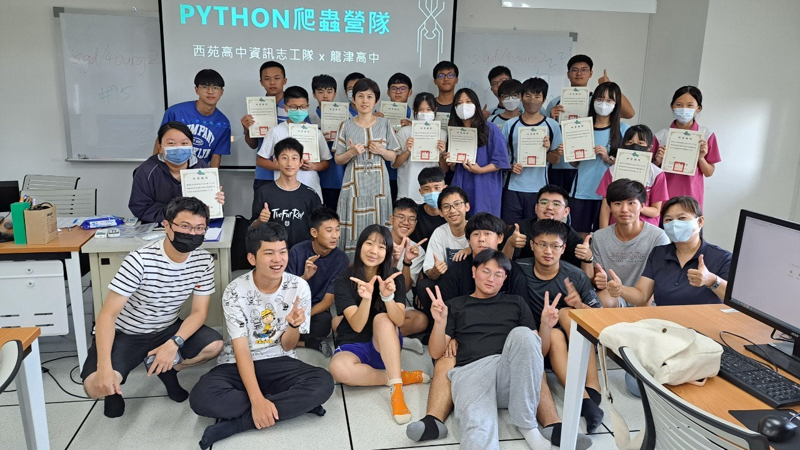
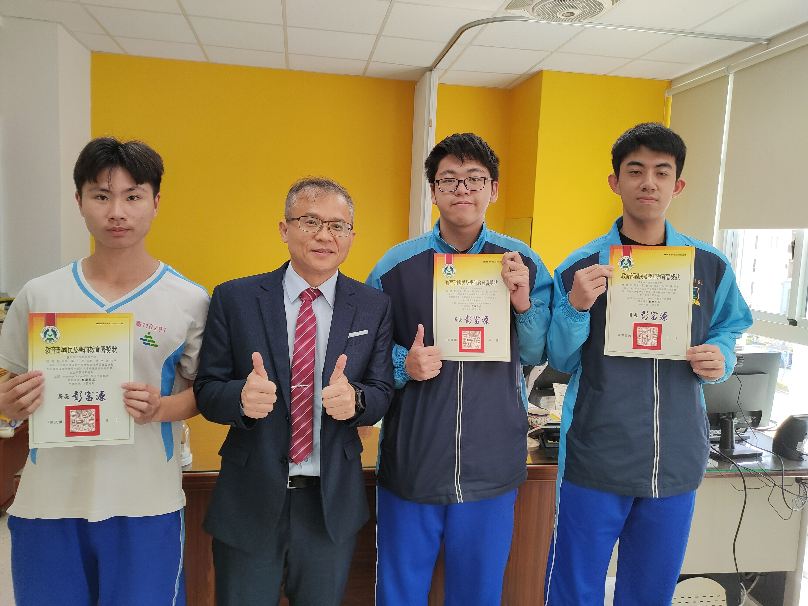
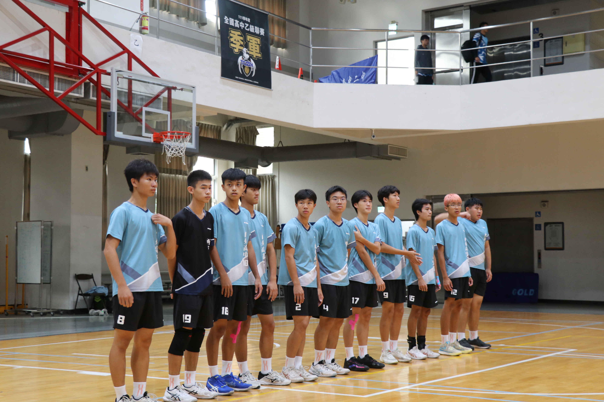

我來自台中西屯，鄰近逢甲，高中讀西苑高中，社區學校，第一次接觸程式是在國小電腦課的那隻貓Scratch，同時爸爸也擔任程式啟蒙導師。
高中時，有幸加入學校創立的資訊志工隊。興趣是排球與打電腦遊戲，在高一時，加入了排球隊，並在高二當任上了隊長。
因為在小時候就有初步接觸程式，並在高中確立志向，向讀資工系的方向努力，像是參加 APCS 測驗，希望能在大學甚至是研究所學習更多更深入的程式知識與能力。

目標在於協助校方處理資訊相關事務，同時舉辦資訊營隊。三年中，我們學習簡易網路連接問題處理、C++基礎營隊、到偏鄉辦 Arduino 實作與到其他高中辦 Pyhton 爬蟲。同時，在校內也舉辦 APCS 讀書會，由資訊能力佳的同學帶領下，精進程式能力。

目標在於學習以 Python 搭配 Mediapipe 與 OpenCV，使用 sklearn 進行訓練並產生模型，最終榮獲教育部自主學習-觀摩作品的肯定。

擔任球隊隊長，帶領團隊參與了高中乙級聯賽、由體大舉辦的中區排球交流賽、中市市長盃排球錦標賽、甚至是嘉義朴子腳教育盃，累積了豐富的團隊合作與領導經驗。